Recently I architected, developed and deployed a highly scalable LLM app on top of Azure Cloud. Below is the architecture that I used to deploy the entire pipeline from, consolidating data into azure blob storage, to generate embeddings using Open AI, saving the embeddings in pgVector, and using Open AI to to generate responses on top of Azure App Service.
Feature Pipeline: Ingesting Data into Azure Blob Storage
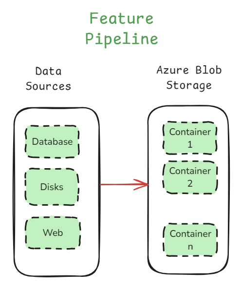
We may have multiple data sources sometimes where we want to put it at one place where we read the data, chunk, and and index it.
Azure blob storage is a powerful storage solution to handle large-scale data needed for fine-tuning LLM models.
An added advantage is using detecting events such as addition, deletion, modification of blobs, and we can use these events to trigger other activities, which we will discuss later in this post.
In the above feature pipeline, we are gathering data from multiple data sources such as a database, a disk, web, etc, and putting it together, so that we just have one dataset to deal with.
From here, we can have a dataloader which reads the data and we can continue with further activies.
Depending on how big the RAG pipeline is, we can create multiple buckets which can serve different purposes, or simply to build different indexes, for scaling.
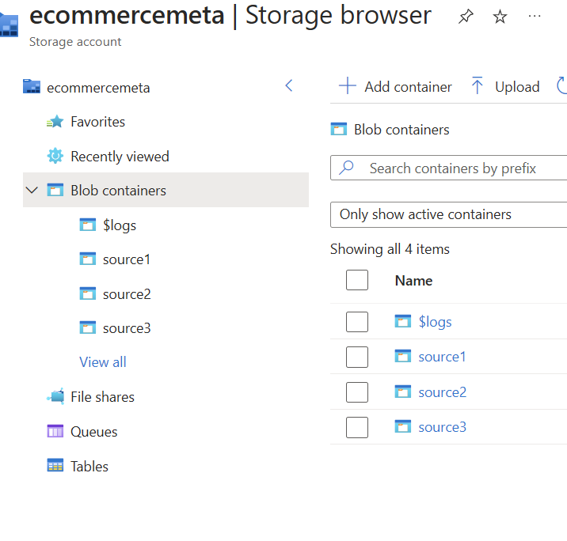
Index Pipeline: Transforming Data into Searchable Embeddings
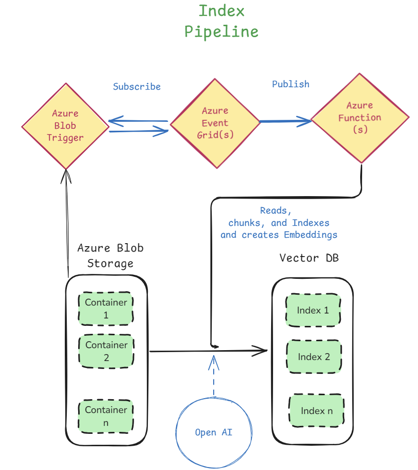
Now lets look at the indexing pipeline. This system helps process and store data efficiently, making it easy to search and retrieve data/embeddings from the vector database.
This is how the indexing pipeline works:
1. Uploading Files to Azure Blob Storage
Our data is stored in Azure Blob Storage, which holds different files in containers.
Whenever a new file is uploaded, an Azure Blob Trigger detects it and starts the pipeline.
And we can create an event using the Events section of the particular azure blob storage account.
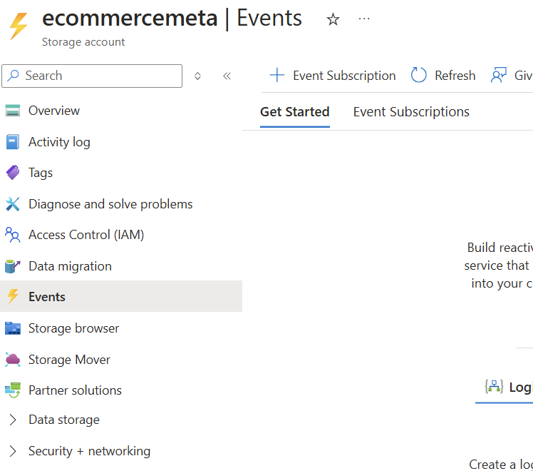
When we are creating the event, we can select the types of events that we want to the pipeline to get triggered to. For example, in the below, image, we have selected different types of events related blob, and the directory.
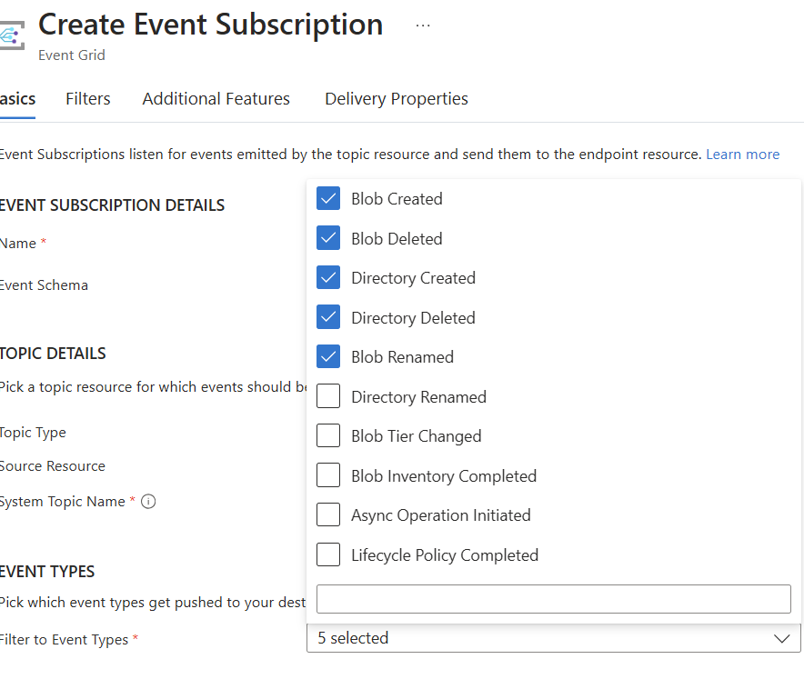
Once we select the event types, we can select the endpoint type. In my case, I want to trigger an azure function, so I selected azure function.
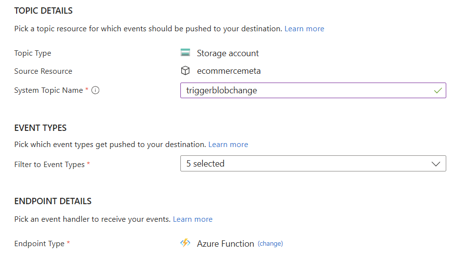
2. Azure Event Grid Sends Notifications
The trigger sends an event to Azure Event Grid, which acts as a messenger to notify other services.
This ensures that our system knows when a new file arrives and processes it immediately.
We need not setup anything in the case of Azure Event Grid, the event trigger described above takes care of it.
3. Processing with Azure Functions
Azure Functions are basically serverless programs that handle execution, in this case, handle our reading data, chunking, indexing.
We need not manage any infra, its basically serverless where we have an interface. We use this interface to paste our python code which basically connects different things on the cloud, and performs a set of activies.
These functions read the new file, break it into smaller chunks, and create embeddings (numerical representations of text) using OpenAI’s models.
These embeddings help the system understand and search data efficiently.
To create a function, head over to Azure Functions, select the type of function. In my case I selecte consumption app, which is a serverless function, with added advantage of automatic scaling.
Once you create a Function App, we can create a function by selecting a template, in my case, I selected Blob trigger
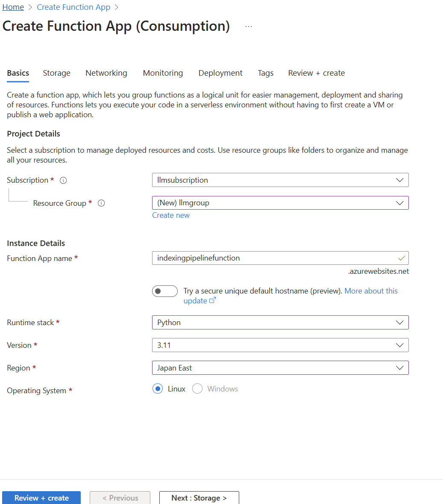
Once I created the function app, I can write code which reads from a blob container or a specific folder inside blob container, and process the indexing pipeline.
Here if you look at the indexing pipeline image above, we have three main components: 1. Azure Blob Trigger 2. Azure Event Grid 3. Azure Function
Azure blob trigger detects certain types of events that happens, and we create it. Azure Event Grid, subscribes and listens to Azure Blob Trigger, and once it receives a message, it will publish the message to the Azure Function, which helps us trigger the function.
If we look at it, the interaction between these three components is working like a Pub/Sub event.
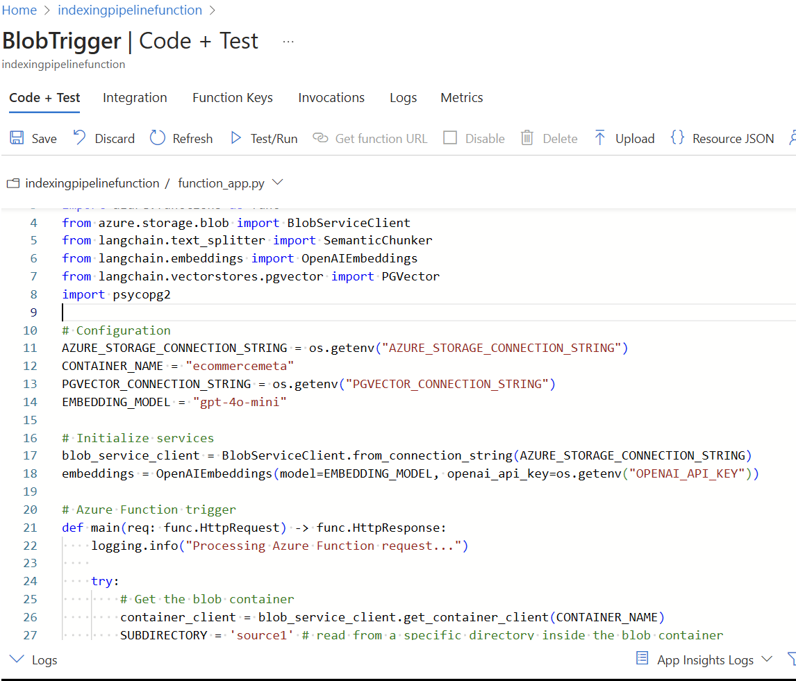
Once the function app is trigger, we can put all the code in one single function app, or make calls to backend APIs depending on the complexity.
4. Storing in a Vector Database
After processing, the embeddings and indexed data are stored in a vector database.
This allows fast and intelligent searching of data based on meaning rather than just keywords.
Query Pipeline: Serving Real-time Requests
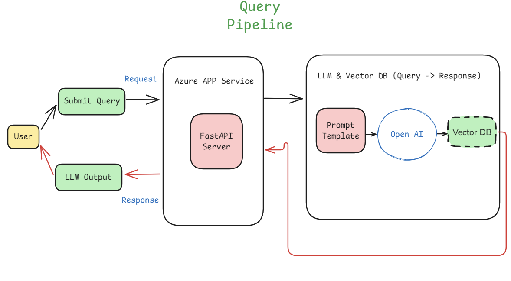
After succesfully indexing our data in the Vector DB, we can serve the end users for their requests.
This pipeline basically fetches, and retrieves relevant information using a LLM, such as OpenAI from the vector db, which allows the users to submit queries and get meaningful reponses.
The process is described below.
1. User Submits a Query
A user enters a question or search request.
This query is sent to an Azure App Service, which runs a FastAPI server to process the request.
2. Processing the Query
The FastAPI server formats the query and forwards it to a prompt template.
This template structures the query properly before sending it to OpenAI’s LLM.
3. Fetching Relevant Information
The LLM interacts with the vector database, which stores indexed data.
The vector database helps find the most relevant data based on meaning, not just keywords.
4. Generating and Returning a Response
The LLM processes the query and retrieves relevant information from the vector database.
It generates a meaningful response and sends it back to the FastAPI server.
Finally, the user receives the response in a simple and easy-to-read format.
Scaling In & Scaling Out:
Depending on the User base, we may have to scale in and scale out of app servers that we are running.
Azure App Service which runs our servers, automatically can handle scale in to server to large user base based on demand and scale out, to save costs.
To understand this, lets look at below images:
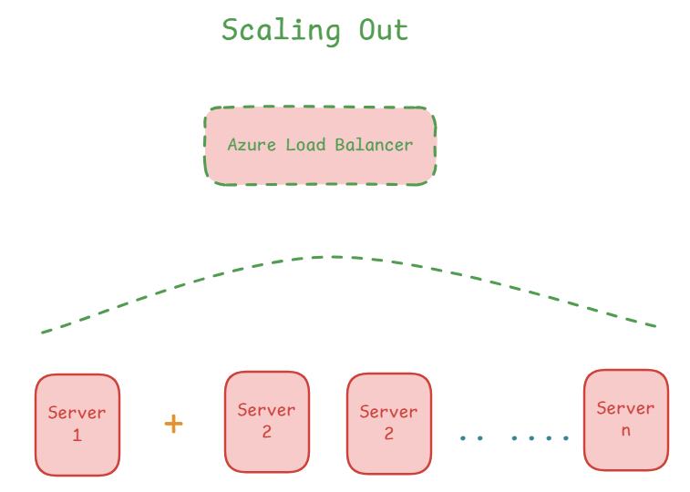
Scale out is basically adding more resources.
When the User demand is high, we can add more servers, also called horizontal scaling, which gives us more CPU, more memory, disk space, and so on.
Here the requests are sent to the Load Balancer which takes care of routing requests to various servers.
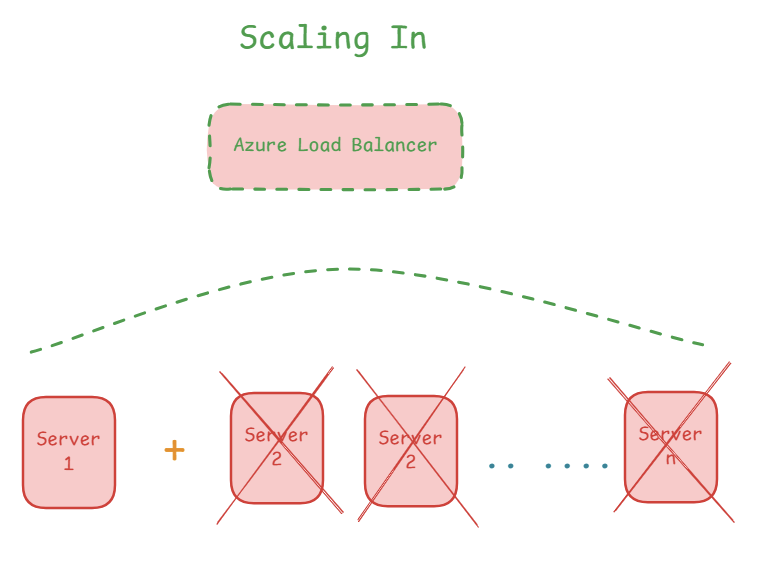
Scale in is basically removing the resources to save cost when they are not required.
We can use this feature under Setting under our app. For example I created an app service. I have highlighted the features in red box below.
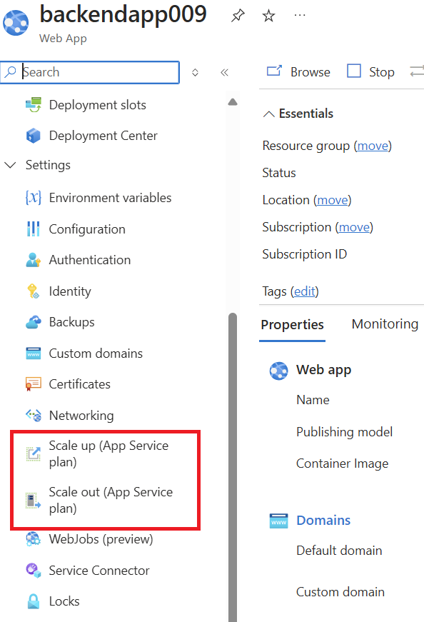
Once we select scaling, we can see the list of options provided by Azure App Service, we just click and upgrade. It will take care of scaling in and out automatically.
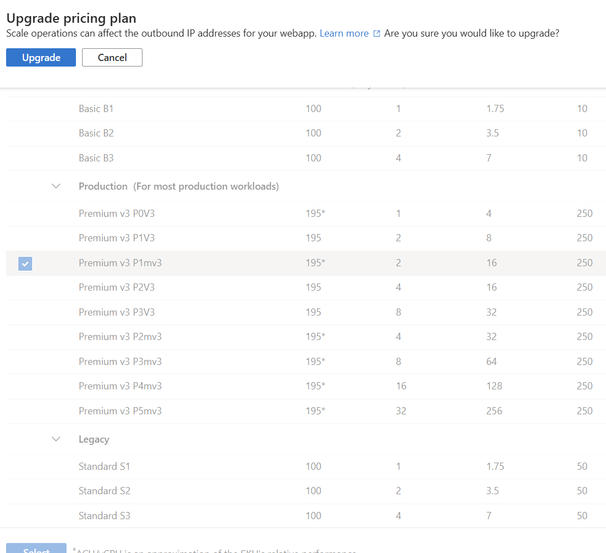
FallBack API:
There are always server/API related failures, so it is important to have a fallback API. For example, we can use OpenAI API as the primary API, and use Azure Open AI API as fallback in case of failure, or vice versa.